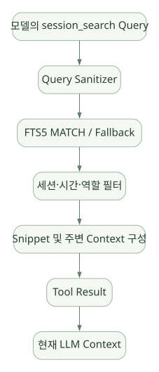

SECOND STUDY / Memory·검색·Skills
Memory·검색·Skills
이번 단원의 읽는 관점
파일 기록과 현재 프롬프트 반영 시점을 나누고, FTS5 검색과 Skill의 점진적 로딩을 연결합니다.
살펴볼 경계Memory Frozen Snapshot, 원본 DB와 검색 인덱스, Skill 생성과 신뢰성 검증을 구분하세요.
이 페이지의 세부 목차
9. SQLite·FTS5와 RAG의 차이#
9.1 SQLite가 담당하는 수준#
[DOC] Hermes는 state.db에 Session 메타데이터·메시지·사용량·Routing 관련 정보를 저장하고, FTS5 가상 테이블을 통해 과거 대화 전문 검색을 제공한다. DB는 로컬/프로필별 대화 상태 저장소이지, 모든 외부 도메인 문서를 자동으로 수집하는 범용 지식 플랫폼은 아니다.
예시 구성:
state.db (WAL)
├─ sessions : Session 단위 정보
├─ messages : 실제 대화·Tool 메시지
├─ messages_fts : 일반 Full-Text Index
├─ messages_fts_trigram : 일부 Substring 검색 보조
├─ messages_fts_cjk : 한국어·중국어·일본어 검색 최적화(가용 시)
├─ session_model_usage : 모델·작업별 사용량
└─ 운영·라우팅·압축·비동기 위임 관련 테이블문서: https://hermes-agent.nousresearch.com/docs/developer-guide/session-storage
9.2 FTS5는 어느 수준의 검색인가?#
FTS5는 SQLite 내장 Full-Text Search 확장이다. 단순히 LIKE '%단어%'로 전체 행을 훑는 대신 역색인(Inverted Index)으로 Token이 등장하는 문서를 찾아 검색한다. 검색어 구문·논리 연산·접두어·스니펫·랭킹 등의 기능을 제공한다. 다만 의미 기반 Vector 유사도 검색과 동일하지 않다.
문서 A: "설비 A에서 vacuum alarm 발생"
문서 B: "장비 진공 압력 이상 경보"
Lexical Search("vacuum alarm"):
A는 높은 문자열 일치, B는 동의어 매핑이 없으면 검색 누락 가능
Semantic Vector Search:
모델의 Embedding 품질에 따라 A와 B의 의미가 가깝다고 판단할 여지비교:
| 방식 | 강점 | 취약점 | 적절한 용도 |
|---|---|---|---|
| SQLite 일반 Query | 정확한 ID, 시간, 필터 | 자연어 검색에 약함 | Session 메타데이터 |
| FTS5 Token Search | 빠르고 결정적, 키워드/식별자에 강함 | 동의어·의미 유사어 탐색 부족 | 과거 대화 검색 |
| FTS5 Trigram | 부분 문자열·일부 CJK 검색 | 인덱스 크기, 짧은 검색어 문제 | 문자열 조각 |
| CJK Bigram Tokenizer | 2글자 CJK 키워드 검색 개선 | 로딩/지원 환경 확인 필요 | 한국어·중국어·일본어 세션 |
| Vector Retrieval | 의미 유사성·패러프레이즈 | 임베딩 비용·인덱스·오탐 | 대형 의미 지식베이스 |
| Hybrid Retrieval | Exact + Semantic 보완 | 운영·재정렬 비용 | 높은 Recall과 근거 추적 필요 시 |
[SRC] hermes_state_fts.py에는 cjk_unicode61 Tokenizer를 사용하는 CJK Bigram 인덱스 및 실패 시 Fallback 동작이 공개돼 있다. 한국어 1~2글자 검색어가 Trigram 조건 때문에 느린 전체 스캔으로 떨어지는 문제를 개선하려는 구현임을 코드 주석이 설명한다. 단, 운영 환경에서 해당 네이티브 Tokenizer 로딩에 성공했는지는 별도 확인해야 한다.
코드: https://github.com/NousResearch/hermes-agent/blob/v0.22.5/hermes_state_fts.py
9.3 FTS5 검색의 전체 흐름#
가로로 이동해서 읽을 수 있습니다. 도식 크게 보기 ↗

원문의 학습용 도식입니다. 연결 방향·분기 조건·점선·쌍방향 연결을 보존해 세로로 배치했습니다. 실제 구현·의사코드·해석의 구분은 본문을 함께 읽으세요.
도식 원문 보기 (Mermaid)
flowchart LR
Q[모델의 session_search Query] --> S[Query Sanitizer]
S --> F[FTS5 MATCH / Fallback]
F --> J[세션·시간·역할 필터]
J --> H[Snippet 및 주변 Context 구성]
H --> R[Tool Result]
R --> M[현재 LLM Context]중요: 과거 대화가 DB에 들어있다와 현재 LLM이 그 대화를 알고 있다는 다르다. Tool 또는 사전 검색 경로를 통해 선별된 결과만 현재 Context로 올라온다.
9.4 '왜 Hermes는 RAG를 안 쓰는가?'라는 질문 바로잡기#
'RAG'는 데이터를 검색해 LLM 생성에 보조 근거로 넣는 패턴이고, 'Vector DB'는 그 패턴을 구현하는 저장·검색 기술 선택지 중 하나다. 따라서 FTS5로 과거 Session을 검색해 LLM에 주는 것도 넓은 의미에서 Retrieval-Augmented Generation의 한 형태다. 다만 Hermes의 Built-in Session Retrieval은 기본적으로 Embedding 기반 Dense Vector RAG가 아니다.
- 기본 Session Search의 초점은 개인의 대화 기록/Tool 메시지에 있다.
- Vector Index 없이도 로컬 설치·관리·동기화가 단순하다.
- 명령어, 파일명, Tool 이름, 에러코드처럼 Exact Match가 중요한 영역에 특히 적합하다.
- 반대로 의미가 유사한 다른 표현을 포괄하는 Recall은 제한될 수 있다.
- 외부 Vector DB/RAG 서비스를 Tool이나 Plugin으로 연동할 수 있는지와 기본 세션 검색 아키텍처는 별개의 문제다.
[INF] 왜 Vector DB를 기본으로 두지 않았을 가능성이 큰가? 개인 설치형 Agent에서 추가 서비스·Embedding 모델·인덱스 유지 비용을 줄이고, 로그·코드 검색의 정확도를 우선하는 실용적 Trade-off로 해석할 수 있다. 다만 개발자의 역사적 의도를 직접 증명하는 설계 문서가 없다면 공식 채택 이유라고 단정하지 않는다.
9.5 인덱싱의 정합성도 배워야 한다#
[DOC][SRC] 메시지 추가·갱신·삭제와 FTS 인덱스의 동기화를 위한 Trigger와 재구축 표식이 존재한다. 인덱스 손상 또는 Native Tokenizer 로딩 실패가 있어도 원본 메시지 저장을 무조건 중단시키지 않도록 분리한 경로가 있다.
프레임워크 설계 시 체크리스트:
- 원본 테이블이 정본(Source of Truth)인가?
- 검색 인덱스는 언제, 어떤 트랜잭션으로 갱신되는가?
- 인덱스 재구축 중 검색·쓰기를 어떻게 처리하는가?
- 인덱스 손상/미지원 환경에서의 Fallback은 안전한가?
- 삭제된 메시지가 검색 결과에 재등장하지 않는가?
- RAG를 추가할 경우 문서 ACL과 Session ACL을 어떻게 일치시키는가?